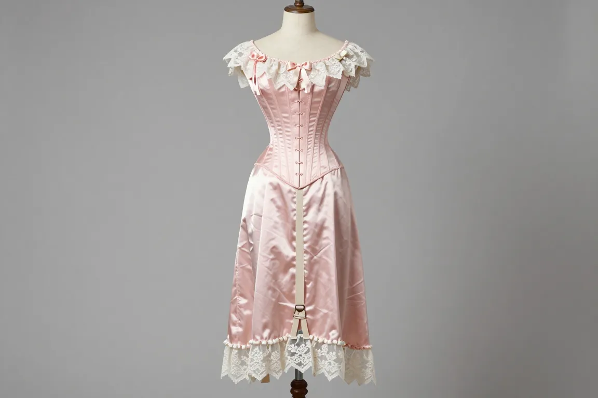

The long, straight-busk corset of the Edwardian years. It presses the stomach flat, throws the hip back and the bust forward, and gives the S-curve of the 1900 silhouette.

Core thesis
A corset that is cut straight in front and low on the bust is healthier and gives the new S-shaped line of 1900.
Design principles
Cut the front busk long and straight, 35 to 45 cm, so that the stomach lies flat.
Cut the top edge low at the bust, so that the bust is free and sits forward.
Cut the back to curve in at the waist and out at the hip, to push the hip back.
Reduce the pressure on the stomach, and put the hold on the hip and the back.
Make the body of coutil or strong cotton, with spring steel in the busk and the bones.
Add four suspenders to the lower edge, for the stockings.
Trim the top with machine lace and a narrow ribbon.